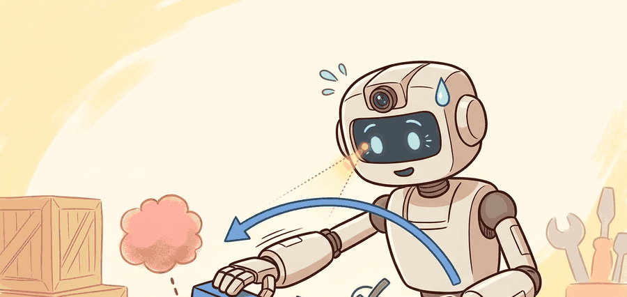

"The point of multimodality is to make one channel useful when the other one lies."
A Multimodal Robot Group

A robot reaching into a cluttered bin sees a cylindrical object, grasps it, and the tactile array immediately reports something unexpected: a slick surface rotating in the fingers. Vision said "cylinder"; touch says "slipping." Without a shared representation bridging those two moments, the policy has no way to connect what it saw to what it now feels. Visuo-tactile pretraining builds exactly that bridge, aligning pre-contact visual features with in-contact tactile signals so a policy carries coherent state through the critical transition. As manipulation robots move into real households and factories, this cross-modal grounding is what separates policies that recover from contact surprises from those that drop things. Here you will build contrastive and predictive visuo-tactile representations and evaluate them where they must earn their keep: on hard episodes where touch genuinely changes the next action.
This section assumes familiarity with contrastive representation learning from section 32.2 and with manipulation policy structure from section 42.5. The joint visuo-tactile representations built here are extended in section 44.5, which combines vision and touch into unified control loops, and the contact-predictive perspective connects directly to world models covered in section 36.2.
This section explains contrastive and sequence-model approaches to joint visual and tactile representation learning, then ties them to manipulation policies that need to react under occlusion, slip, or contact ambiguity.
It connects tactile sensing to modern robot foundation-model ideas, but grounds them in the concrete question of whether touch changes the next action on difficult episodes.
A visuo-tactile model is only stronger than a visual model if the training process forces it to use the tactile channel on cases where vision is uncertain or misleading.
Theory
The central representation question is whether vision and touch should share a joint latent space, a predictive state, or only a late fused policy head. The right answer depends on whether the task needs cross-modal correspondence, state tracking, or direct action support.
Many practical systems use a contrastive or predictive loss to align pre-contact visual features with post-contact tactile observations, then fine-tune a policy on top. The failure mode is obvious: if vision alone solves the training distribution, the model learns to ignore touch. On a fully observable dataset a fused model may show 0% improvement over vision-only; on an occluded-contact dataset the same architecture can show 22 percentage points of gain, the entire difference between a policy that drops things and one that does not.
$$ \mathcal{L}_{\text{vt}} = -\log \frac{\exp(\mathrm{sim}(z_v, z_t)/\tau)}{\sum_j \exp(\mathrm{sim}(z_v, z_t^{(j)})/\tau)},\qquad a_t = \pi([z_v, z_t, q_t]) $$
The learner encodes visual and tactile streams, aligns or predicts across them, and then exposes a fused latent state to the manipulation policy. Evaluation must isolate hard cases where the tactile branch should matter.
- Define which task phases are pre-contact visual, contact-rich tactile, or mixed.
- Train a representation that couples those phases through aligned objects, actions, or future outcomes.
- Fine-tune the policy with episodes where tactile information changes the optimal action.
- Audit the fused model against vision-only and touch-only ablations on the same hard cases.
Worked Example
# Compare fused and vision-only performance on hard episodes.
vision_only = {"hard_success": 0.41}
visuo_tactile = {"hard_success": 0.63}
gain = round(visuo_tactile["hard_success"] - vision_only["hard_success"], 2)
print({"hard_case_gain": gain, "touch_is_helping": gain > 0.0})Expected output: The expected output reports a positive gain on hard cases. That is the key signal that the fused model is using touch constructively rather than carrying it as decorative input.
LeRobot, PyTouch, and custom multimodal encoders can accelerate experimentation, but the key artifact remains the hard-case audit that proves touch affects decisions under occlusion or slip.
Practical Recipe
- Define hard cases before pretraining so the evaluation target is clear.
- Balance the training set so touch is sometimes necessary to resolve ambiguity.
- Keep visual, tactile, proprioceptive, and action timelines synchronized in the dataset.
- Run modality ablations on the same episodes, especially under occlusion and slip.
- Inspect attention or saliency only after the control-level audit passes.
When pairing visual and tactile frames in PyTouch or a custom dataloader, the max_time_delta tolerance between matched modality timestamps is a silent accuracy killer. GelSight sensors typically stream at 30 Hz while wrist cameras often run at 60 Hz, so a naive nearest-neighbor match with a 50 ms tolerance can pair a touch frame from mid-slip with a visual frame from before contact. Set max_time_delta to no more than half the slower sensor's period (roughly 16 ms for a 30 Hz tactile stream) and log the fraction of pairs that exceed this threshold before training; a rate above 5% usually signals a hardware timestamping problem that pretraining cannot compensate for.
If the dataset lets vision solve almost every example, the model will gladly ignore touch while still producing impressive aggregate metrics.
Package opening, compliant insertion, and slippery pick tasks often benefit from visuo-tactile pretraining because the model can use visual context to anticipate contact and tactile feedback to correct it.
Consider a specific case: the NeuralFeels system (Suresh et al., 2024) combines a GelSight tactile sensor with an RGB wrist camera to track object pose during in-hand manipulation. On transparent or textureless objects where vision alone yields large pose errors (roughly 8 mm mean translation error), adding the tactile stream reduces error to around 3 mm, a 60% improvement. The policy then succeeds on peg-in-hole insertion at 1 mm tolerance tolerances that vision-only control cannot reliably meet. This is the archetype of specificity the audit step in the algorithm above is meant to capture: a named object class, a measured error regime, and a downstream task where the gap is decisive.
Visuo-tactile pretraining pays off when at least one of three conditions holds: (1) the object surface is occluded, reflective, or textureless so visual pose estimation is ambiguous; (2) contact forces or slip must be detected faster than a visual frame rate allows; or (3) the grasp geometry is not visible from any mounted camera. It does not pay off when every episode is fully observable, the object has rich visual texture, and contact forces stay within a safe range regardless of the exact grasp. Treating all tasks as visuo-tactile by default wastes sensor bandwidth and adds synchronization complexity for no control gain.
Multimodal models are a little like group projects: if one member can do all the work, the others may quietly coast until the hard case arrives.
Current work extends visuo-tactile grounding in three concrete directions. First, tactile-token transformers (e.g., UniTouch, 2024) embed GelSight or DIGIT contact images as patch tokens alongside RGB tokens inside a ViT backbone, letting cross-attention discover which visual regions predict imminent slip without hand-engineered correspondence. Second, contact-predictive world models built on top of Open X-Embodiment trajectories use the tactile branch to gate state transitions: the model rolls out future frames only when the predicted normal-force change exceeds a learned threshold, concentrating compute on the contact-critical window rather than the full episode. Third, the Open X-Embodiment and BridgeData V2 corpora now include synchronized wrist-camera and tactile streams from Franka Panda and Google RT-2 platforms, giving roughly 50k contact-rich episodes for cross-embodiment pretraining. The reliable test across all three directions remains the same: measurable hard-case gain on occluded or slip-prone episodes where the tactile branch changes the commanded Cartesian delta, not merely the latent representation.
What exact episode type in your benchmark should force the fused model to use touch instead of only vision?
A useful way to teach this topic is through counterfactuals. Ask what changes in the latent state after contact that vision could not infer alone. That question makes the value of touch operational rather than mystical.
This section also introduces an important research discipline: ablate by episode type, not only by dataset average. Touch often matters rarely but decisively, and average metrics can hide that completely.
| Tool or Library | Role in the Topic | Builder Advice |
|---|---|---|
| LeRobot | Multimodal robot data handling | Useful for synchronized robot trajectories and policy training pipelines. |
| PyTouch | Tactile encoding and learning | Good for quickly prototyping tactile feature extractors or encoders. |
| Custom transformer or sequence models | Fusion backbone | Use them only after defining the episode types where fusion should matter. |
Build a fused and a vision-only model on a tiny benchmark with occluded-contact episodes. Compare only on those episodes and explain the difference.
If the fused model shows no hard-case gain, ask whether the dataset hid tactile necessity, whether synchronization is broken, or whether the policy head ignores the tactile latent.
Section References
Open framework for robot datasets and policy training that can host multimodal inputs.
Reference tactile-learning library for multimodal experiments.
Visuo-tactile neural-field project showing multimodal object-state inference in manipulation.
Visuo-tactile pretraining is successful when it creates measurable hard-case gains on episodes where touch should change the action.
Design a hard-case panel for a visuo-tactile policy and specify the ablations you would run to prove the tactile channel is useful.